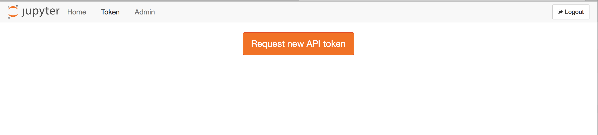

Using JupyterHub’s REST API#
This section will give you information on:
what you can do with the API
create an API token
add API tokens to the config files
make an API request programmatically using the requests library
learn more about JupyterHub’s API
What you can do with the API#
Using the JupyterHub REST API, you can perform actions on the Hub, such as:
checking which users are active
adding or removing users
stopping or starting single user notebook servers
authenticating services
communicating with an individual Jupyter server’s REST API
A REST API provides a standard way for users to get and send information to the Hub.
Create an API token#
To send requests using JupyterHub API, you must pass an API token with the request.
The preferred way of generating an API token is:
openssl rand -hex 32
This openssl command generates a potential token that can then be
added to JupyterHub using .api_tokens configuration setting in
jupyterhub_config.py.
Alternatively, use the jupyterhub token command to generate a token
for a specific hub user by passing the ‘username’:
jupyterhub token <username>
This command generates a random string to use as a token and registers it for the given user with the Hub’s database.
In version 0.8.0, a token request page for generating an API token is available from the JupyterHub user interface:


Assigning permissions to a token#
Prior to JupyterHub 2.0, there were two levels of permissions:
user, and
admin
where a token would always have full permissions to do whatever its owner could do.
In JupyterHub 2.0, specific permissions are now defined as ‘scopes’, and can be assigned both at the user/service level, and at the individual token level.
This allows e.g. a user with full admin permissions to request a token with limited permissions.
Updating to admin services#
The api_tokens configuration has been softly deprecated since the introduction of services.
We have no plans to remove it,
but deployments are encouraged to use service configuration instead.
If you have been using api_tokens to create an admin user
and a token for that user to perform some automations,
the services mechanism may be a better fit.
If you have the following configuration:
c.JupyterHub.admin_users = {"service-admin",}
c.JupyterHub.api_tokens = {
"secret-token": "service-admin",
}
This can be updated to create a service, with the following configuration:
c.JupyterHub.services = [
{
# give the token a name
"name": "service-admin",
"api_token": "secret-token",
# "admin": True, # if using JupyterHub 1.x
},
]
# roles are new in JupyterHub 2.0
# prior to 2.0, only 'admin': True or False
# was available
c.JupyterHub.load_roles = [
{
"name": "service-role",
"scopes": [
# specify the permissions the token should have
"admin:users",
],
"services": [
# assign the service the above permissions
"service-admin",
],
}
]
The token will have the permissions listed in the role (see [scopes][] for a list of available permissions), but there will no longer be a user account created to house it. The main noticeable difference is that there will be no notebook server associated with the account and the service will not show up in the various user list pages and APIs.
Make an API request#
To authenticate your requests, pass the API token in the request’s Authorization header.
Use requests#
Using the popular Python requests library, here’s example code to make an API request for the users of a JupyterHub deployment. An API GET request is made, and the request sends an API token for authorization. The response contains information about the users:
import requests
api_url = 'http://127.0.0.1:8081/hub/api'
r = requests.get(api_url + '/users',
headers={
'Authorization': f'token {token}',
}
)
r.raise_for_status()
users = r.json()
This example provides a slightly more complicated request, yet the process is very similar:
import requests
api_url = 'http://127.0.0.1:8081/hub/api'
data = {'name': 'mygroup', 'users': ['user1', 'user2']}
r = requests.post(api_url + '/groups/formgrade-data301/users',
headers={
'Authorization': f'token {token}',
},
json=data,
)
r.raise_for_status()
r.json()
The same API token can also authorize access to the Jupyter Notebook REST API
provided by notebook servers managed by JupyterHub if it has the necessary access:users:servers scope:
Paginating API requests#
New in version 2.0.
Pagination is available through the offset and limit query parameters on
list endpoints, which can be used to return ideally sized windows of results.
Here’s example code demonstrating pagination on the GET /users
endpoint to fetch the first 20 records.
import os
import requests
api_url = 'http://127.0.0.1:8081/hub/api'
r = requests.get(
api_url + '/users?offset=0&limit=20',
headers={
"Accept": "application/jupyterhub-pagination+json",
"Authorization": f"token {token}",
},
)
r.raise_for_status()
r.json()
For backward-compatibility, the default structure of list responses is unchanged. However, this lacks pagination information (e.g. is there a next page), so if you have enough users that they won’t fit in the first response, it is a good idea to opt-in to the new paginated list format. There is a new schema for list responses which include pagination information. You can request this by including the header:
Accept: application/jupyterhub-pagination+json
with your request, in which case a response will look like:
{
"items": [
{
"name": "username",
"kind": "user",
...
},
],
"_pagination": {
"offset": 0,
"limit": 20,
"total": 50,
"next": {
"offset": 20,
"limit": 20,
"url": "http://127.0.0.1:8081/hub/api/users?limit=20&offset=20"
}
}
}
where the list results (same as pre-2.0) will be in items,
and pagination info will be in _pagination.
The next field will include the offset, limit, and URL for requesting the next page.
next will be null if there is no next page.
Pagination is governed by two configuration options:
JupyterHub.api_page_default_limit- the page size, iflimitis unspecified in the request and the new pagination API is requested (default: 50)JupyterHub.api_page_max_limit- the maximum page size a request can ask for (default: 200)
Pagination is enabled on the GET /users, GET /groups, and GET /proxy REST endpoints.
Enabling users to spawn multiple named-servers via the API#
With JupyterHub version 0.8, support for multiple servers per user has landed. Prior to that, each user could only launch a single default server via the API like this:
curl -X POST -H "Authorization: token <token>" "http://127.0.0.1:8081/hub/api/users/<user>/server"
With the named-server functionality, it’s now possible to launch more than one specifically named servers against a given user. This could be used, for instance, to launch each server based on a different image.
First you must enable named-servers by including the following setting in the jupyterhub_config.py file.
c.JupyterHub.allow_named_servers = True
If using the zero-to-jupyterhub-k8s set-up to run JupyterHub,
then instead of editing the jupyterhub_config.py file directly, you could pass
the following as part of the config.yaml file, as per the tutorial:
hub:
extraConfig: |
c.JupyterHub.allow_named_servers = True
With that setting in place, a new named-server is activated like this:
curl -X POST -H "Authorization: token <token>" "http://127.0.0.1:8081/hub/api/users/<user>/servers/<serverA>"
curl -X POST -H "Authorization: token <token>" "http://127.0.0.1:8081/hub/api/users/<user>/servers/<serverB>"
The same servers can be stopped by substituting DELETE for POST above.
Some caveats for using named-servers#
For named-servers via the API to work, the spawner used to spawn these servers will need to be able to handle the case of multiple servers per user and ensure uniqueness of names, particularly if servers are spawned via docker containers or kubernetes pods.
Learn more about the API#
You can see the full JupyterHub REST API for details.